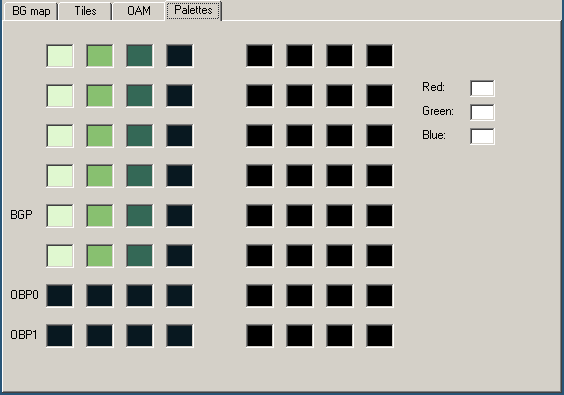
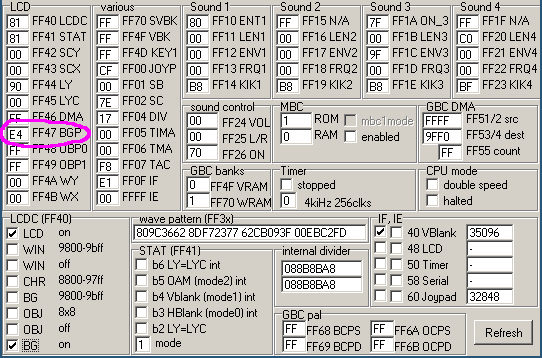

パレット
前回の授業で、パレットを使ってタイルに色をつけることを簡単に説明しましたが、パレットについてはまだあまり触れていません。
白黒のゲームボーイには、BGP（「BackGround Palette」）という背景用のパレットと、OBP0と OBP1（「OBject Palette 0/1」）というオブジェクト用のパレットがあります。 オブジェクトって何？」という方は、第Ⅱ部でご紹介しますので、ここでは背景に注目しましょう。
🌈
ゲームボーイカラーでは、当然ながら色が導入されましたが、これは主にパレットの扱いを見直したものです。 ゲームボーイカラーの特徴については、わかりやすくするために第Ⅰ部では触れませんが、後編で触れます。
BGBのVRAMビューアーの「パレット」タブを選択してください。

🥴
VRAMビューワのレイアウトが変だと思われるかもしれませんが、前回のTipsボックスで述べたように、ゲームボーイカラーでパレットの使い方が変わり、さらにスーパーゲームボーイでは、またまた変になってしまいました。
VRAMビューアでは、モノクロとカラーで同じレイアウトを使用しているため、このような奇妙なレイアウトになっています。
今回は「BGP」行を取り上げます。 前回説明したように、タイルには各画素の「カラーインデックス」が格納されており、これを用いてパレットへのインデックスを作成します。 この行ではカラーナンバー01が一番左、ナンバー3が一番右になります。
つまり、0番が「白」、1番が「薄いグレー」、2番が「濃いグレー」、3番が「黒」です。 黒」は本当の黒ではないし、「白」は本当の白ではないので、エアクォートをつけています。 なお、初代ゲームボーイは緑の濃淡がありましたが、後のゲームボーイプケットは灰色の濃淡になっています。 さらに、ゲームボーイカラーは対応していないゲームの色づけも自動的に行いますよ。

All this to say, one shouldn’t expect specific colors out of a Game Boy game2, just four more or less bright colors.
Getting our hands dirty
Well, so far in this tutorial, besides running the Hello World, we have been pretty passive, watching it unfold. What do you say we start prodding the ROM a bit?
In BGB’s debugger, select the “Window” menu, and open the “IO map” (or just press F10 within the debugger).

While the VRAM viewer offers a visual representation of the palette, the IO map shows the nitty-gritty: how it’s encoded. The IO map also lets us modify BGP easily; but to do so, we need to understand how values we write are turned into colors.
Encoding
Fortunately, the encoding is very simple. I will explain it, and at the same time, give an example with the palette we have at hand, $E4.
Take the byte, break its 8 bits into 4 groups of 2.
[BGP] = $E4
$E4 = %11100100 (refresh your memory in the "Binary and hexadecimal" lesson if needed!)
That gets broken down into %11, %10, %01, %00
Color number 0 is the rightmost “group”, color number 3 is the leftmost one. Simple! And this matches what the VRAM viewer is showing us: color number 0, the rightmost, is the brightest (%00), up to color number 3, the leftmost and the darkest (%11).
Lights out
For fun, let’s make the screen completely black.
We can easily do this by setting all colors in the palette to black (%11).
This would be %11 %11 %11 %11 = $FF.
In the IO map, click the text box left of “BGP”, erase the “E4”, type “FF”, and hit Enter. BGP immediately updates, turning the screen black!
What if we wanted to take the original palette, but invert it? %11 would become %00, %01 would become %10, %10 would become %01, and %00 would become %11. We would get thus:
%11_10_01_00
↓ ↓ ↓ ↓
%00_01_10_11
(I’m not giving the value in hexadecimal, use this as an opportunity to exercise your bin-to-hex conversions!)
If you go to the Tile Viewer and uncheck the “show paletted” checkbox, you will notice that the tile data stays the same regardless of how the palette is modified! This is an advantage of using palettes: fading the screen in and out is very cheap, just modifying a single byte, instead of having to update every single on-screen pixel.
Got all that? Then let’s take a look at the last missing puzzle piece in the Hello World’s rendering process, the tilemap!
Numbering often starts at 0 when working with computers. We will understand why later, but for now, please bear with it!
Well, it is possible to detect these different models and account for them, but this would require taking plenty of corner cases into consideration, so it’s probably not worth the effort.